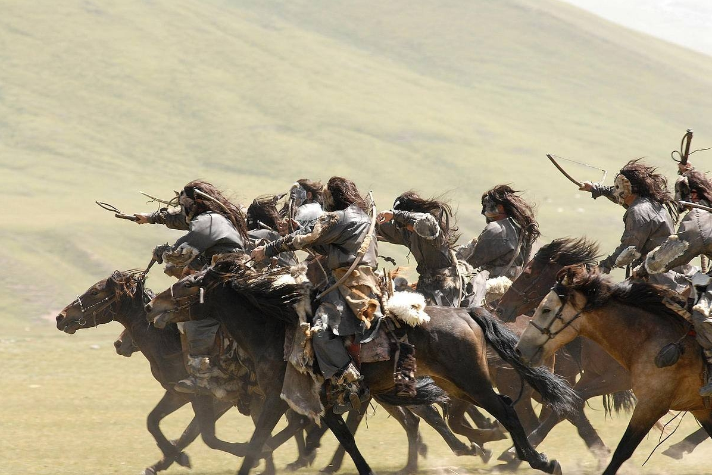

羌族历史
古羌人（先秦时期）:
羌人属汉藏语系民族，最初活跃于黄河上游（今甘青地区）， 以游牧为主。古羌人分支众多，包括“姜姓”部落（如炎帝部落）， 与黄帝部落融合后成为华夏族的重要成分。
秦汉时期的分化：
秦汉时，羌人部分融入汉族，部分西迁至青藏高原（演变为吐蕃、藏族先民之一）， 另一部分南迁至岷江上游（今四川阿坝一带），形成现代羌族的主体。 “西南夷”中的羌人：汉代在西南设“汶山郡”（今四川茂县、汶川等地），管理羌人聚居区， 部分羌人融入当地氐、彝等民族。
羌人属汉藏语系民族，最初活跃于黄河上游（今甘青地区）， 以游牧为主。古羌人分支众多，包括“姜姓”部落（如炎帝部落）， 与黄帝部落融合后成为华夏族的重要成分。
秦汉时期的分化：
秦汉时，羌人部分融入汉族，部分西迁至青藏高原（演变为吐蕃、藏族先民之一）， 另一部分南迁至岷江上游（今四川阿坝一带），形成现代羌族的主体。 “西南夷”中的羌人：汉代在西南设“汶山郡”（今四川茂县、汶川等地），管理羌人聚居区， 部分羌人融入当地氐、彝等民族。

上古传说
与文献记载
民族渊源
与迁徙
现代羌族
的形成